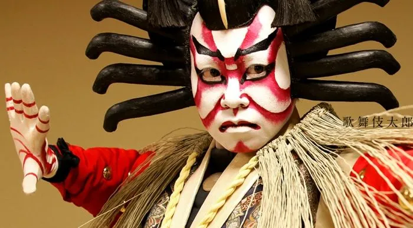
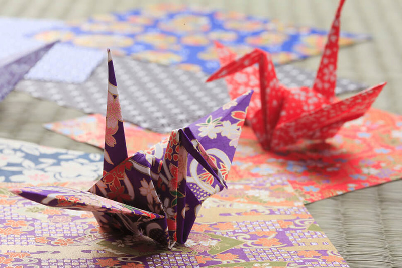

Arte y Cultura Japonesa
Descubre la fascinante dualidad de la cultura japonesa, donde las tradiciones milenarias conviven con las vanguardias artísticas más innovadoras. Contempla la maestría de la caligrafía shodo, déjate cautivar por la belleza del teatro noh y sumérgete en la energía del anime y el manga. Japón te ofrece un viaje a través del tiempo, donde el pasado y el presente se funden en una experiencia cultural única.
Ceremonia del Té (Sadō)

El Sadō, o "camino del té", es una práctica ritualizada que busca la armonía, el respeto, la pureza y la tranquilidad a través de la preparación y el consumo del té matcha. Es una experiencia estética y espiritual que refleja la filosofía zen y la atención al detalle de la cultura japonesa.
Ikebana (Arreglo Floral)

El Ikebana es el arte japonés del arreglo floral, que busca la belleza en la asimetría y el equilibrio entre los elementos naturales. A diferencia de los arreglos florales occidentales, el Ikebana se centra en la línea, la forma y el espacio, creando composiciones que expresan la armonía con la naturaleza. .
Kabuki (Teatro Tradicional)
El Kabuki es una forma de teatro clásico japonés caracterizada por sus elaborados vestuarios, maquillaje y movimientos estilizados. Las historias, a menudo basadas en leyendas y eventos históricos, se representan con música, danza y actuaciones dramáticas, creando un espectáculo visual y auditivo único.
Manga y Anime

El Manga (cómics) y el Anime (animación) son formas de arte narrativo que han ganado popularidad mundial. Con una amplia variedad de géneros y estilos, el Manga y el Anime exploran temas complejos y emociones humanas, reflejando la creatividad y la imaginación de la cultura japonesa contemporánea.
Shodō (Caligrafía Japonesa)

El Shodō es el arte de la caligrafía japonesa, que busca la belleza en la escritura de los caracteres kanji y kana. Más que una simple técnica de escritura, el Shodō es una práctica meditativa que requiere concentración, precisión y expresión personal.
Origami (Papiroflexia)
El Origami es el arte de plegar papel para crear figuras tridimensionales, desde animales y flores hasta formas geométricas. Con una precisión y paciencia meticulosas, los artistas del Origami transforman una simple hoja de papel en una obra de arte.
Kimono (Vestimenta Tradicional)

El Kimono es la vestimenta tradicional japonesa, caracterizada por sus diseños elaborados y su elegancia. Hecho de seda u otros tejidos finos, el Kimono se usa en ocasiones especiales y ceremonias, simbolizando la belleza y la tradición de la cultura japonesa